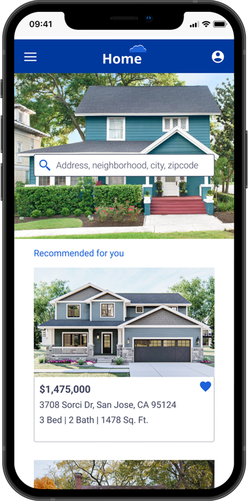
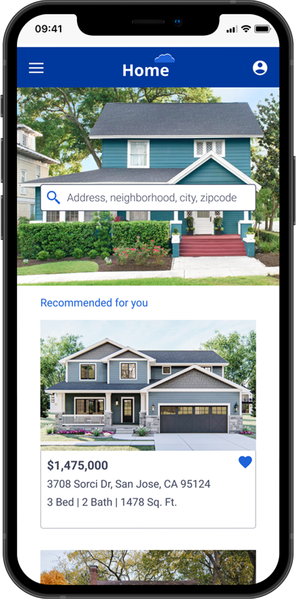

HomeCloud
Database of investment homes


To create a responsive web application that was based on the user research provided by the CareerFoundry Team.
As much of the UX research for this project was provided. I was able to primarily focus on the UI Design aspects:
To design a responsive web application that provides property buyers with information on properties of interest
UX/UI Designer
4 weeks
CareerFoundry UI Focused Course
Figma
We wanted a way for users to be able to:

Rashida
As an IT consultant for a growing tech company, Rashida is frequently on the go, and often holds meetings by phone in her car while driving. She is good at multitasking and relies heavily on technology to help her with this.
I want to provide my family with financial security. I’ve been considering buying property for a while and am looking for a tool that can help me find what I’m looking for, quickly!
Flow Tasks


To save time, I first quickly sketched quick low fidelity wireframes using a paper mobile template and pen to focus on the basic layout and details of the app screens which can later be iterated.


After getting feedback from my mentor and better planning, I created mid-fidelity wireframes with more details to get a better understanding of how a design will look and work. At this point, I can use these wireframes and can test them with the users to gather insights into their behavior and interactions with the software, which can later be used to refine the solution further.

I created two equally beautiful mood boards. I feel as though they each gave off their energy. I decided to go with Mood Board 2 for Home Cloud App UI. As I am designing an app for Investment “Financial Security” wanted to go with a cool color. So, I decided to go with the color blue. Blue communicates serenity, trust, and an inviting atmosphere. It also represents meanings of depth, trust, loyalty, sincerity, wisdom, confidence, stability, faith, and intelligence which fits my project.
Next, I created a Style Guide. A style guide simply documents all of the visual and UI elements of your brand so that people who work on the brand have instructions they can follow to ensure a consistent visual experience on all brand projects.
Documents included here are
 



I created high-fidelity designs by iteratively enhancing and getting user feedback at different design steps.


By using the grid system, I created wireframes for different breakpoints.


I created High Fidelity Wireframes by following all the guidelines from my style guide. Which gave my design a true visual identity with the brand. I inserted my wireframes into mockups for presentation with developers and stakeholders.

Home Cloud web application gave me an amazing opportunity to expand my understanding of UI Design. Throughout the process, I have learned that the secret to a great design is paying close attention to minute details of design and innovatively solving user problems. The project provided me with an opportunity to learn how to solve complex problem by providing a great user experience. I feel strongly positioned and confident to work on more such complex problems.